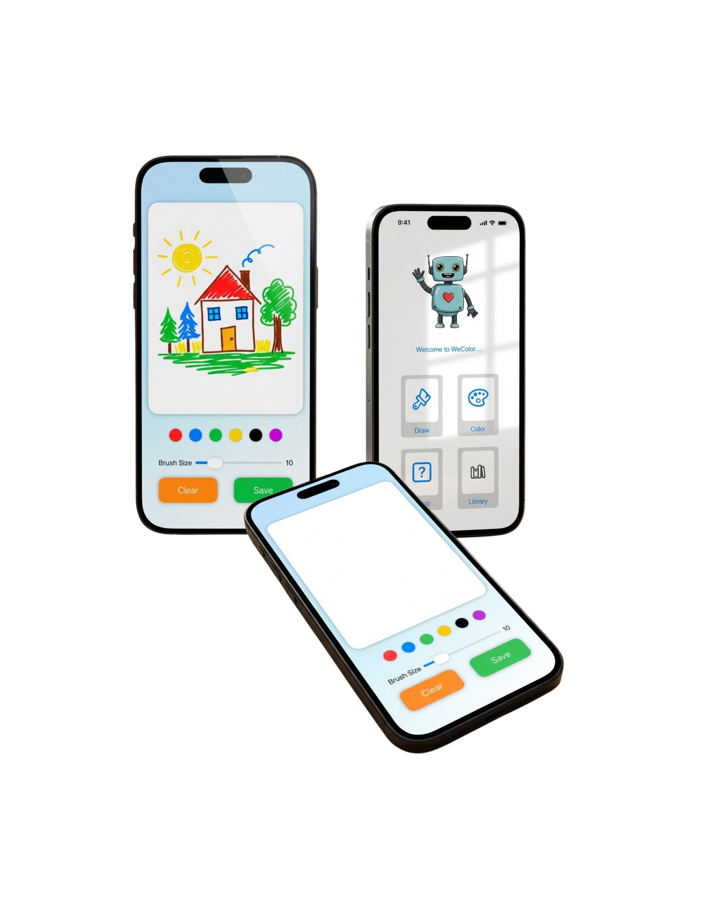
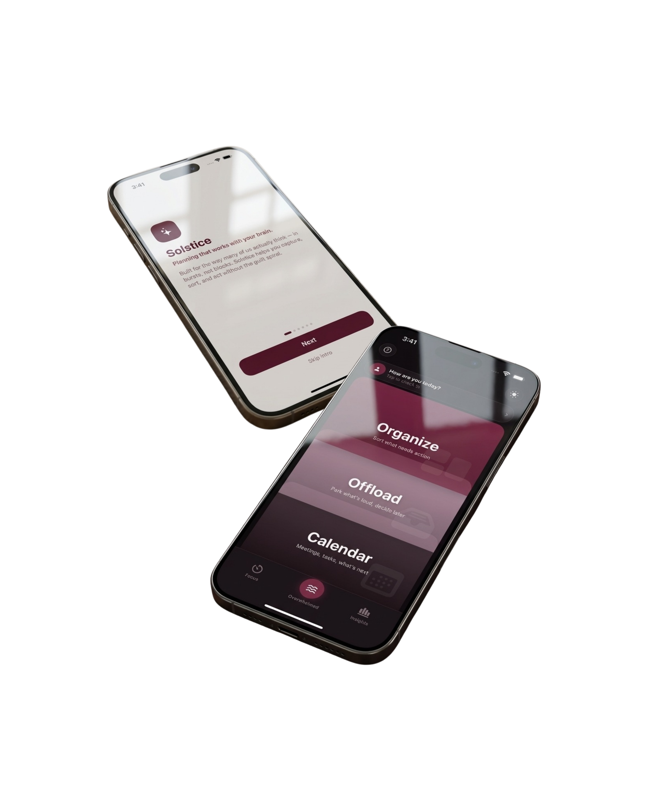
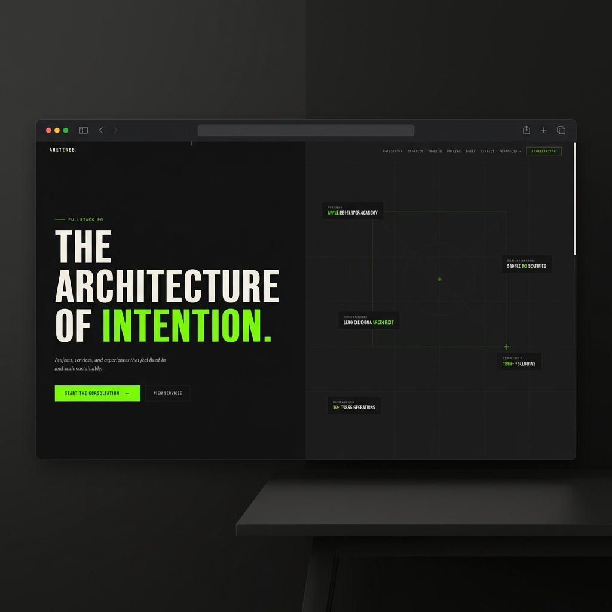

A children's therapeutic iOS app built around a single client brief: empathy. Designed to support emotional regulation and creative development through coloring, drawing, and music — grounded in real user research.
Client handed us one word: empathy. Two rounds of user interviews later, we landed on a truth — children in stressful moments rarely have accessible creative outlets. Core use case defined: therapeutic tech for kids aged 4–10.
Structured the experience around three therapeutic pillars — coloring, drawing, and music. Limited to 5 key screens to reduce cognitive load. Mapped user flow with parent accessibility and child agency both in view.
Built in Xcode with SwiftUI. I led research on neurodivergent-informed UX and cognitive accessibility, collaborating across design and dev to keep the interface understimulating — light colors, primary palette, no visual noise.
Presented to Apple challenge reviewers and our Academy cohort. Evaluated on therapeutic value, technical execution, and UX accessibility. Result: a fully functional iOS app built around a real client brief, grounded in actual research.

App screens · Drawing, canvas & home
Led research on cognitive accessibility and neurodivergent-informed UX. Collaborated with design to keep the interface aesthetically understimulating. Defined team goals, role responsibilities, and client communication expectations. Designed and rehearsed the final presentation for Academy peers and mentors.
A neurodivergent-friendly task manager with built-in nervous system regulation. Planning that works with your brain — not against it. Built solo in Swift Playgrounds over five months.
The problem isn't productivity — it's regulation. Neurodivergent users struggle with task managers that ignore nervous system state. Solstice defined itself as the bridge between getting things done and feeling okay enough to try.
Built around the Eisenhower matrix for mental sorting before physical action. Added a dedicated offload space for ideas not ready to be structured, plus a regulation space with CBT-grounded breathing and grounding tactics.
Five months, nearly 200 hours in Swift Playgrounds. Academy curriculum, a TechTown top-6 hackathon finish, mentors, and independent study. No team, no shortcuts — every design and development decision entirely mine.
Submitted to Apple Swift Student Challenge with a fully functional app and a user manual — documentation that served double duty as a personal learning tool as I built. A complete, working, solo-shipped iOS product.

Onboarding & dashboard · Organize, Offload, Calendar
Began as a React web prototype in October, became a full Swift iOS submission by spring. Guided by the Apple Developer Academy curriculum, mentors, a hackathon placement in the top 6 of 90+ teams, and close to 200 hours of independent study. Every decision — design, architecture, UX, copy — mine.
A consultancy built at the intersection of project management, development, and community advocacy — plus the internal ops suite running it. CRM, expense tracking, content scheduling, document generation. All built by me.
Throughout the Academy I kept landing at the same intersection: PM, dev, and community. I defined Arete & Co. as the formal container for that instinct — a consultancy for project scope, development, implementation, and community collaboration.
Designed and deployed aretebuilds.com on Vercel. Organized the internal ops suite around actual consulting needs: client management, financial tracking, content planning, and document generation — all in one password-protected dashboard.
Migrated the CRM from localStorage to Supabase. Added PDF generation for service agreements, invoices, and NDAs direct from client card modals. Navigated the full stack as a one-person team running a live business.
Live and running. LLC filed in Michigan. Active client engagements. The ops suite is built to the same standard I deliver to clients — because excellence isn't a standard you apply to other people's work.

aretebuilds.com · Live
Everything at aretebuilds.com — the public site, the internal ops suite, the document templates, the brand — designed, built, and maintained by me. Articles of Organization filed for Arete Builds L.L.C. in Michigan. The same skills I use for clients run my own company. That's the point.